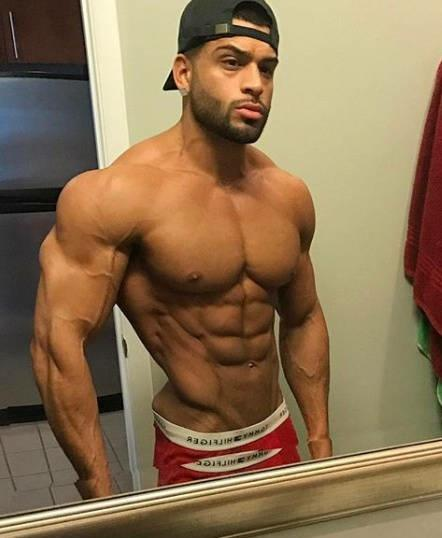

今天又给大家整理了一组关于哑铃练肩的训练动作组合，不过这次的组合与上次的不同，也没有上次的动作多，但是这次训练质量和训练效果一点也不比上次的弱，而且这次的训练强度也比上次的大，所以建议有一定训练基础的朋友，一定要多参与这次的哑铃肩部训练动作。关于肩部对于健身的重要性已经说了无数回了，这次就不讲肩部对于训练的重要性了，一次主要给大家讲一讲肩部训练的一些常见问题。关于肩部训练首先对于健身者来讲，就是重量的选择，如果重量选择不好，一次训练意外可能就会为训练者带来无法想象的灾难。
那么我们在训练时该怎样选择肩部训练的重量呢，首先我们都知道肩部肩关节非常复杂，注定在训练时不能与其他部位训练那样，可以随便的使用一些大重量训练，肩部在训练时如果你的基础力量不够强大，贸然的使用大重量去训练肩部，很容易造成肩部的磨损，所以肩部训练要要使用最合适的重量训练，健身者要找到最合适自己的重量训练肩部，这样才能在训练时避免给肩部带来磨损压力。其实我们想要找到合适自己的重量并不是特别难，只要使用递增重量逐层递增重量就可以很容易找到合适自己的重量，第一步先使用小重量做一组，如果这一组做完感觉肩部没有任何的力竭之感，那么就可以继续递增重量，将重量递增到中等重量，再做一组，如果做这一组你感觉肩部有充分的泵感，而且做完还感觉肩部依然有一些力量可以继续递增重量，那么这个中等重量就是最合适你的肩部训练重量，如果你递增到中等重量训练时一组重量还没做完，就感觉肩部有很大的压力，那么这个重量就不适合你，你需要将重量降低到之前的小重量训练。
肩部训练在你没有根基以前是绝对不能贸然增加重量强行训练的，否者很容易造成肩部磨损负伤，关于如果选择肩部训练的重量就将到这里。下面咱们继续讲讲，肩部训练的动作安排和肩关节功能主要强化部位，关于肩部训练的动作安排也是非常重要的，因为肩部分为三角肌前束，中束，后束三个主要部位，想要肩部真正的有型好看又有立体感，就必须在训练时全面的训练均衡的刺激到它们，要全面的刺激它们就必须要使用多动作，多角度的方式分化刺激，这样才能够达到全面的刺激效果，如果你使用的动作不够，有无法达到全方位的刺激，那么对于肩部的整体发展就有一定的影响，所以肩部训练必须要多动作训练。当然训练的动作有了还是不够的，大家在训练时还要多注重一下旋转肌群的强化，旋转肌群是肩关节和核心保护伞，更是加强肩功能的重要力量，所以在训练时要重心稍微偏向旋转肌群一些。
下面是今天的训练动作，每个动作训练时做4组，组间和动作间都要留有充分的恢复休息时间，最好的休息时间是60-90秒。